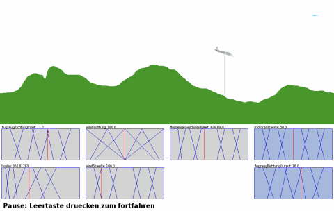

This one started as an homework for university but I really started to like it. The original task was to built a fuzzy controller using Matlab in groups of 2 or 3 students.
I joined Benjamin and another fellow student to create a simple fuzzy controller for flying a plane in a given height above the ground. To make things a little more complex we also considered head wind. As all of us three didn’t like the quite abstract results of our controller in Matlab, we decided to implement a small simulation in processing. We used Edward Saznov’s open source fuzzy inference engine for Java and integrated it into processing. Surprisingly everything worked quite well from the beginning. Although we had some small issues we were able to build a nice looking and functional simulation using the controller we designed. The resulting applet runs perfectly in the browser and as an application. (I love processing’s export-feature.) Check out the sketch by clicking on the picture below.
:http://benedikt.synatic.net/fuzzy/
Here are the controls you might need :-)
R Reset the terrain Space Start / Stop simulatoin Arrow up / down Change wind angle Arrow left Increase wind power Arrow right Reduce wind power Click Set position of the plane Dragging the mouse Draw terrain
We decided to release the source code of this. It still could need some refactoring, but it’s working and deadline was today, so feel free to experiment with it (or even improve it) and sent us some comments!